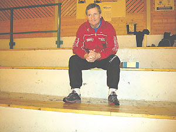
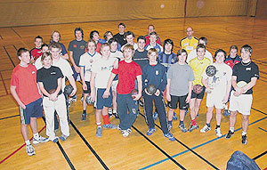
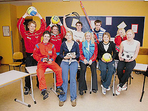

|
Spesialsyr idrettsutdannelseper.eckholdt@kragero-blad.no • 35 98 67 65 | |
|
Simen Muffetangen har gjort det. Fredrik Brubakken også. Det samme har Liv Schønhart, Jekke Liby,
Brigitte Kristoffersen, Jørgen Michalsen, Atle Rønning, Terje Eriksen, Sandro Occhipinti,
Sigurd Nilsen og Preben Fjære Brynemo.
Det har alle gått idrettslinja ved Kragerø videregående skole. Det har også 600 andre tenåringer
gjort i tidsrommet fra 1972 til nå.
|
De tre førstnevnte fikk med seg en mengde A-landskamper i håndball. Jekke satte sitt sterke preg på resultatlistene i orientering og langrenn. Brigitte, eller bare Gitte, kjempet om norgesmestertittelen både i høyde og lengde, og hun har flere landskamper i friidrett. Jørgen Michalsen var en av landets beste seilbrettutøvere. Terje Eriksen og Atle Rønning drev henholdsvis styrkeløft og vektløfting på høyt nordisk nivå. Sandro og Sigurd er fortsatt aktive, og hører med blant de fremste fotballtalentene Kragerø har fostret, mens Preben Brynemo la opp i fjor etter å fått med seg NM gull, VM- og OL-deltakelse i kombinert. |
Idrett i hodet og kroppKragerø var sammen med to andre videregående skoler først om å tilby idrett grunnkurs her i landet. Det toårige grunnkurset ble innført i forbindelse med ordningen om forsøksgymnas i 1972. Den gangen gikk elevene i to år på idrett grunnkurs, før de etterpå måtte ta to år på allmennfag for å få studiekompetanse. Først på -80 tallet innførte man et ettårig påbyggingskurs i idrett, og da fikk elevene studiekompetanse etter tre år. De første årene måtte våre elever dra til Porsgrunn for å gå på påbyggingskurset. - Fra 1994 ble utdannelsen delt opp i grunnkurs, VK1 og VK2-kurs. Denne ordningen har vi også i dag, og alle elever som gjennomfører de tre årene får studiekompetanse på linje med den allmennfagelevene får, sier avdelingsleder for idrettslinja, Einar Brynemo. Søkningen til idrettslinja ved Kragerø Videregående skole har variert mye fra år til år. For to år siden hadde vi bare fire søkere, og linja sto i fare for å bli nedlagt. - Vi måtte tenke nytt, og høsten 2002 inngikk vi en intensjonsavtale med håndballgruppa i Kragerø. De som ville satse på håndball fikk et utvidet fordypningsstudium med Arild Weisser fra håndballgruppa som lærer. Det ble en suksess, og vi fikk 22 søkere. I fjor høst utvidet vi dette tilbudet til også å gjelde fotball og ridning, og over 50 elever søkte idrettslinja. Ingen andre linjer ved skolen hadde flere søkere, forteller Einar Brynemo. Ved å kombinere elevene på idrett med elevene på allmennfag, ble det mulig å ta opp hele 38 elever på idrett. Idrett og allmennfagelevene ble likt fordelt på tre klasser i fellesfagene, mens de ble undervist hver for seg i studieretningsfagene. På denne måten kom flere av elevene inn på sine primærønsker. |

ALDRI LEI: Einar Brynemo har vært idrettslærer i over 30 år og er ennå ikke lei. - Jeg har drømmejobb og blir aldri lei av å gå i treningstøy.

MED BALL: Ballsporten fotball og håndball har flest fordypningselever, her elevene sammen med lærerne
Ove Heimdal, Arild Weisser og Pether Krautmeyer.
|
Spesialsyr- Med dagens opplegg spesialsyr vi i stor grad undervisningstilbudet til hver enkelt elev. De kan allerede fra første klasse velge fordypningidretter, og timetallet i disse idrettene økes for hvert år. Foruten de tre spesielle tilbudene, vi gir elevene i håndball med Arild Weisser og Peter Krautmeyer som lærere, fotball med Ove Heimdal som lærer og ridning med Helle Klettenes og andre lærere fra Kragerø ridesenter, samler vi de elevene som velger andre idretter i en fjerde gruppe. Disse elevene velger selv hvilken idrett de vil satse på. Alt er mulig å velge, fra skiskyting og dans til golf eller friluftsliv. Vi strekker oss langt for at alle elever skal få tilfredsstilt sine primærønsker, sier Einar Brynemo. Han påpeker videre at golf kan bli et spennende nytt satsningsområde. Interessen er økende, og vi har mange fine golfanlegg i distriktet. I tillegg til fordypningidrettene må elevene gjennomføre en del obligatoriske kurs i ulike idretter, og særlig populære er idrettslinjas mange ekskursjoner på både sommer og vinterstid. Einar Brynemo har undervist idrettselever i Kragerø side 1976 og kunne ikke tenke seg en bedre jobb, særlig siden han har kunnet kombinere skolejobben med jobb som landslagstrener for norske kastere i over 20 år. Han blir aldri lei av å gå i treningstøy. Det er en del av livet hans. Det er også utdanning av unge idrettsinteresserte ungdommer. - Jeg har rett og slett en drømmejobb, og legger ikke skjul på det, sier Einar Brynemo. |

ANDRE FORDYPNINGER: Ikke alle har fotball eller håndball som fordypningsidrett. Preben Eliassen (f.v.) har motor, Christine Ljønes (dans), Maiken Walle (svømming), Benedikte Lieberg (volleyball) og Hilde Støen (fotball). Bak fra v. Stian Østrem (volleyball), Susanne Nilsen (volleyball), Emil Engebretsen (landhockey), Kenneth Haugholt (langrenn) og Lene Bigseth (volleyball). |